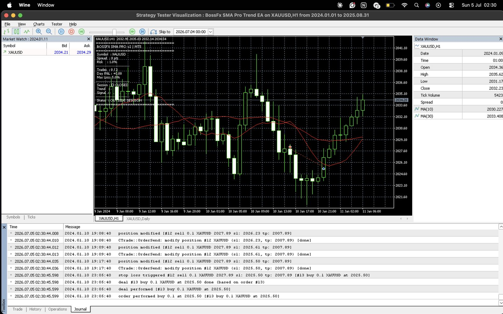
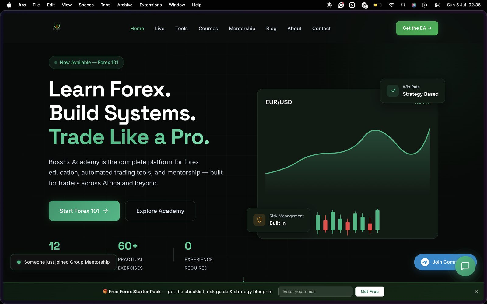

I started studying Computer Science at the University of Lagos in 2018. The plan was simple: five years, some projects, an internship or two, then a career in software. That plan did not survive contact with reality. COVID shut everything down, then the ASUU strikes came, and years I should have spent learning and building disappeared while I waited for school to resume.
I'm not telling you this for sympathy. I'm telling you because my whole path only makes sense if you know it didn't start in a classroom. It started with me refusing to sit still. I couldn't control when lectures would resume, so I focused on something I could control. For me, that was trading.
I picked up an interest in forex around 2022, and honestly, it wasn't about money at first. I enjoyed understanding how markets moved. I spent long hours studying charts, testing strategies, documenting my trades, and learning risk management the slow, expensive way.
The accidental mentor
Then friends started asking questions. First one, then a few more, mostly referrals. Before I had a name for it, I was a mentor. The first version of BossFx wasn't a company. It was me posting market analysis on Telegram and YouTube and consistently teaching maybe three to five people at a time.
Teaching exposed something I didn't expect. The biggest problem my students had wasn't trading. It was technology.
One student asked me a question that caught me completely off guard. He wasn't confused about the market. He was confused about how to get started at all. Opening the platform, finding the right resources, knowing what to click first. I had built my teaching around what I thought was important, not around what beginners actually struggled with.
I kept circling one question: why does something this powerful still feel so difficult for the average person? Somewhere in there, my trading questions quietly became engineering questions.
Shipping something imperfect
My first website was nothing special, and I mean that literally. I built it with Hostinger's AI website builder because it was the fastest option I had. A landing page, mentorship booking, a few digital products I'd written. Live in days.
I don't regret that choice at all. It taught me a lesson I still hold onto: publishing something imperfect beats waiting for perfection.
But growth has a way of exposing your foundations. Every new idea started with me searching Hostinger for a setting or a plugin, and if it wasn't there, that was the end of the conversation. I wanted user accounts. Gated downloads after signup. Automated mentorship registration. Proper payment integration. Analytics. Dashboards. Eventually a real learning platform. The builder had opinions about all of it, and its opinion was usually no.
The pricing made it worse. Every meaningful feature seemed to sit behind another upgrade or subscription. At some point I realised I wasn't just paying for hosting anymore. I was paying for permission to build.
So I asked myself the question that changed everything: if BossFx is going to become the platform I imagine, why am I building it on something I don't actually control?
Volunteering to make my own life harder
I decided to rebuild everything from scratch. Next.js, because I wanted something modern I could grow into. Supabase, because I needed authentication, a database and storage without writing an entire backend from day one. It felt like the right balance between learning and actually shipping.
Then reality hit, and it didn't hit where I expected.
The first real fight wasn't an algorithm. It was deployment. I pushed what I was sure was a working site to Vercel, because it ran fine on my laptop. The deployment failed. I checked environment variables. Then package versions. Then imports. Then configuration files. Every fix seemed to uncover a new problem underneath it.
The worst part wasn't any single error. It was the fog. When something broke, I genuinely couldn't tell whether the problem was my code, Supabase, Next.js or Vercel. Four suspects, and I didn't know how to interrogate any of them.
There were nights I seriously wondered whether leaving the website builder had been a mistake. With Hostinger, at least the site stayed online. Now everything was my responsibility. Some evenings I'd spend four or five hours chasing a problem that turned out to be a missing environment variable.
The four questions I ask now
What came out of those weeks is probably the most useful thing I own as an engineer: a boring, repeatable way to debug. When something breaks now, I don't panic and I don't assume the framework is broken. I ask:
- Is it local or production?
- Is it the code or the environment?
- What changed since it last worked?
- Can I isolate one variable before changing five others?
It's slower than changing ten things at once and hoping. It also actually works.
The bug that made this lesson permanent was almost embarrassing. Much later, I was cleaning up my BossFx PWA repository, with Claude Code reviewing the codebase alongside me, and the production build refused to compile. I assumed it was another deep framework issue. The review found the real cause, and it was nothing like that. There were two Supabase client files in the project, and one of them had a trailing space in its filename:
lib/supabaseClient .ts ← the file that actually existed
lib/supabaseClient.ts ← the file my import was looking forOn top of that, @supabase/supabase-js wasn't even listed in package.json. Which meant this application had never truly built. Two tiny mistakes, invisible in the editor, completely fatal in production.
I should be clear about the AI part, because people get this wrong. Claude Code doesn't build things instead of me. It works more like a senior engineer I can ask questions without feeling embarrassed. It challenges my assumptions and explains why something is broken instead of just handing me code to paste. The thinking is still my job. That's exactly why I trust what I've learned.
That one bug taught me more than some courses I've paid for. Engineering isn't always difficult algorithms. Sometimes it's noticing the tiny detail everyone assumes couldn't possibly be the problem.
The rabbit holes nobody warns you about
Owning your own stack means owning everything around the code too, and nobody tells you how deep those holes go.
My automated emails from Brevo kept landing in Gmail's Promotions tab instead of the inbox. Fixing that dragged me into SPF records, DKIM signatures, DMARC policies and sender reputation. I thought I was building a website. Instead I was getting an education in email authentication.
Moving my domain between providers was supposed to be one click on "Transfer Domain." It turned into DNS propagation, email routing, and re-verifying every integration to make sure nothing silently died.
Then analytics. Adding Google Analytics and Microsoft Clarity to a Next.js app is not hard. Confirming that events actually fire, in production, on real traffic, is a separate job entirely, and it's the kind of work tutorials never show you.
None of this is glamorous. All of it is the job.
Code with real money attached
The website taught me production discipline. My trading systems taught me a different kind of respect.
I write Expert Advisors in MQL5, automated systems that execute trades on MetaTrader 5. When your code makes decisions with real money attached, "it seems to work" is not a standard. My SMA trend EA is honestly mostly risk management wrapped around a simple signal: percentage-based position sizing, a daily loss circuit breaker, a cap on trades per day, spread and session filters.
Even the position sizing is written defensively. Calculate the lot, then clamp it against every limit the broker gives you:
lot = MathFloor(lot / lotStep) * lotStep; // round down to the broker's step
if(lot < minLot) lot = minLot; // never below the minimum
if(lot > maxLot) lot = maxLot; // never above the maximum
if(marginRequired > freeMargin) return minLot; // never trade what you can't affordEvery change, no matter how small, meant re-running the backtests, because a tiny adjustment can completely alter a strategy's behaviour. Then forward-testing on a demo account before real money ever touched it.

That project settled something for me: writing code is only half the job. Proving the code behaves correctly is the other half.
Users redesign your thinking
Remember that student who couldn't figure out how to get started? He changed how I build more than any tutorial did.
After that conversation, I stopped throwing information at people and started breaking everything into structured learning paths, beginner resources, recorded sessions, and eventually the website itself. Every time someone got stuck, I treated it as a design problem instead of assuming they weren't trying hard enough.
That mindset carried straight into software. When users can't figure something out, my first question is no longer "why don't they understand?" It's "what did I design poorly?"
Stubbornness
People assume what kept me going was passion. Honestly? It was stubbornness.
Every week there was another thing I didn't know. Git. Authentication. Environment variables. DNS. Email deliverability. Production builds. And I was bootstrapping from Nigeria, where almost every online service costs money once you pass the free tier. Every subscription was another expense I had to justify to myself.
I kept going because I had invested too much time to go backwards, and because I knew that if I wanted to build products instead of just websites, I had to understand how the technology actually worked. I didn't want to spend my career waiting for a platform to unlock features for me.
The irony is that this is exactly what I got. Today I understand my own stack well enough to build it, debug it and improve it myself. Nobody has to unlock anything for me anymore.
The website rebuilt me
Back then, I measured progress almost entirely by visible numbers. Was BossFx growing? How many students? How much revenue? When those numbers moved slowly, I felt like I wasn't moving either.
I was measuring the wrong things.
The real progress was quieter. Every problem I solved was making me slightly more capable. Learning Git. Understanding deployments. Fighting DNS. Building with Next.js and Supabase. Writing MQL5 systems. Learning to work with AI as an engineering partner instead of a chatbot. None of it felt like a breakthrough on the day it happened. Stacked over two years, it completely changed what I'm able to build.
If I had quit in 2024, I would have walked away right before everything I was learning started connecting together.
Looking back, I realised I wasn't really collecting programming languages or frameworks. I was collecting ways of thinking. Every deployment failure taught me to isolate variables. Every confused student taught me to simplify complexity. Every bug taught me to slow down before assuming. Those lessons now follow me into every product I build.
I used to think I was building BossFx. Looking back, BossFx was also building me. It forced me to become a trader who could teach, a founder who could sell, and eventually an engineer who could build the tools I always wished existed.

The work is public now. The platform is live at bossfxcademy.com, the trading system code is on my GitHub, and I document what I'm building at timilehin-shobande.vercel.app. If any of this is useful to you, or you're building something of your own from Lagos or anywhere else, my inbox is open.